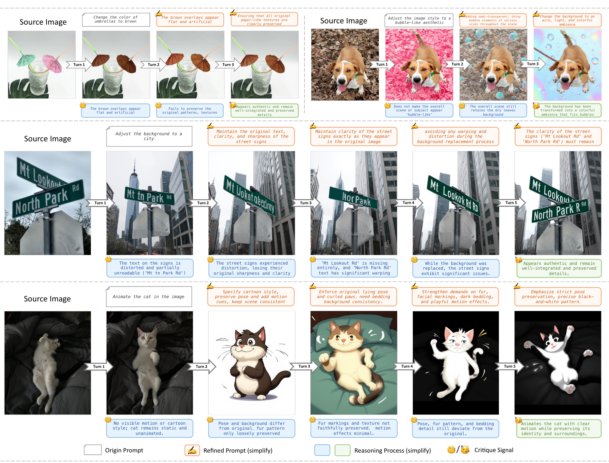
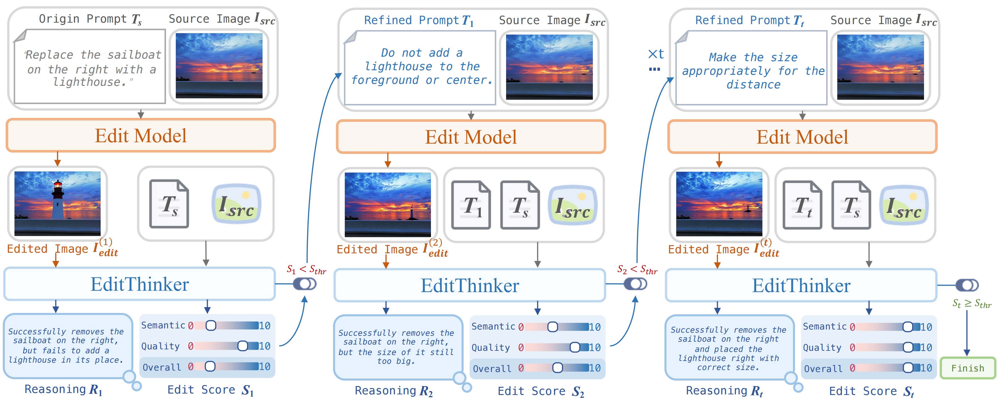
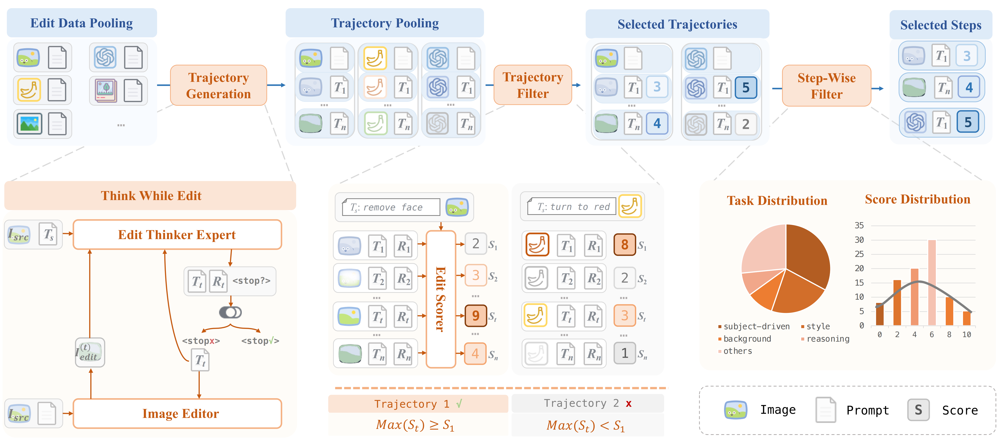
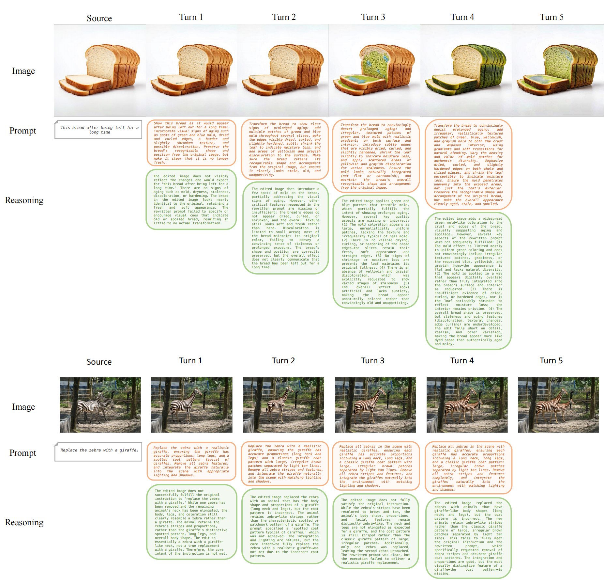

EditThinker Enhancing Image Editors via Iterative Reasoning with a Plug-and-Play VLM

Editing through visual feedback. EditThinker critiques intermediate results and refines instructions for the next round. Source images, edits, and abbreviated prompts and critiques are shown.
Abstract
Image editors can produce realistic images while still failing to satisfy the requested changes. Improving their instruction following requires identifying these failures and translating visual feedback into instructions that the editor can execute. We introduce EditThinker, an 8B vision-language model (VLM) that enhances existing image editors through iterative reasoning while keeping their weights fixed. EditThinker jointly critiques semantic consistency and visual quality, reasons about editing failures, and refines the instruction in a structured response. It interacts with the editor through a Critique-Refine-Repeat loop, providing a plug-and-play interface for feedback-driven editing. Learning effective refinements requires more than imitating plausible expert suggestions: the instructions must work with the capabilities of the underlying editor. We therefore combine supervised fine-tuning on expert demonstrations with reinforcement learning from executed editing outcomes, using format, critic, and edit rewards. To support this training, we construct ThinkEdit-167k, a dataset of 167k step-wise samples with unified supervision for critique, reasoning, and instruction refinement. Across four tested editors, EditThinker improves overall scores on GEdit-Bench-EN, ImgEdit-Bench, RISE-Bench, and KRIS-Bench. Ablations examine the joint model design, data allocation, and training across VLM backbones. In our GEdit round-budget study, refinement achieves higher scores with fewer editor calls than best-of-N selection. We will release our data construction framework, datasets, and models.
Framework: Critique-Refine-Repeat

Critique-Refine-Repeat pipeline. The editor first applies the original instruction $T_s$ to the source image $I_{src}$. EditThinker then predicts semantic consistency and visual quality scores, reasons about editing failures, and refines the instruction. The fixed editor applies each refined instruction to the original source image.
Evaluate Results
Given the source image, the previous edit, and the original and previous instructions, EditThinker reasons about the current result and predicts its semantic consistency and visual quality scores.
Refine Instructions
The same 8B VLM generates a revised instruction from this visual critique. The fixed editor applies the revised instruction to $I_{src}$ to produce the next edited image.
Use Feedback Across Rounds
The loop stops when the geometric mean of the predicted semantic and quality scores reaches 8, or after at most five editing rounds by default.
Two-stage training. Supervised fine-tuning learns the structured reasoning, scoring, and instruction-refinement response from GPT-4.1 demonstrations. Reinforcement learning then uses format, critic, and edit rewards from executed editing outcomes while keeping the image editor fixed.
Data Construction: ThinkEdit-167k

Data construction pipeline. Expert-guided editing generates trajectories, which are scored, filtered for improvement, and truncated at their best step. We extract step-wise samples, balance task and score distributions, and partition them for SFT and RL.
ThinkEdit-167k contains 140k step-wise SFT samples from stable, high-quality trajectories and 27k step-wise RL samples from challenging, high-variance trajectories. GPT-4.1 provides expert demonstrations and scores intermediate edits for training.
Data construction starts from 140k editing instances sampled from OpenGPT-4o-Image, ShareGPT-4o-Image, and Pico-Banana-400K. Trajectory filtering retains 70k trajectories; 60k are used to construct the SFT samples and 10k to construct the RL samples.
Main Results
Adding EditThinker-8B improves all four editors' overall scores on GEdit-Bench-EN, ImgEdit-Bench, RISE-Bench, and KRIS-Bench. Each reproduced editor is paired with its EditThinker-8B counterpart below.
| Model | GEdit-Bench-EN | ImgEdit-Bench | RISE-Bench | KRIS-Bench | ||||||
|---|---|---|---|---|---|---|---|---|---|---|
| G_SC | G_PQ | G_O | Overall | Temporal | Causal | Spatial | Logical | Overall | Overall | |
| Open-source Models | ||||||||||
| OmniGen | 5.96 | 5.89 | 5.06 | 2.96 | 1.2 | 1.0 | 0.0 | 1.2 | 0.8 | 28.85 |
| Step1X-Edit | 7.09 | 6.76 | 6.70 | 3.06 | 0.0 | 2.2 | 2.0 | 3.5 | 1.9 | 43.29 |
| ICEdit | 4.94 | 7.39 | 4.87 | 3.05 | - | - | - | - | - | 40.70 |
| HiDream-E1 | 5.66 | 6.06 | 5.01 | 3.17 | 0.0 | 0.0 | 0.0 | 0.0 | 0.0 | 44.72 |
| BAGEL | 7.36 | 6.83 | 6.52 | 3.20 | 2.4 | 5.6 | 14.0 | 1.2 | 6.1 | 56.40 |
| BAGEL (w/ CoT) | 7.70 | 6.51 | 6.66 | 3.56 | 5.9 | 17.8 | 21.0 | 1.2 | 11.9 | 60.41 |
| OmniGen2 | 7.16 | 6.77 | 6.41 | 3.44 | 0.0 | 2.2 | 7.0 | 2.3 | 3.0 | 49.71 |
| Ovis-U1 | - | - | 6.42 | 4.00 | 1.2 | 3.3 | 4.0 | 2.4 | 2.8 | - |
| FLUX.1-Kontext [Dev] | 6.52 | 7.38 | 6.00 | 3.52 | 2.3 | 5.5 | 13.0 | 1.2 | 5.8 | 49.54 |
| UniWorld-V1 | 4.93 | 7.43 | 4.85 | 3.26 | - | - | - | - | 2.22 | 50.27 |
| Step1X-Edit v1.1 | 7.66 | 7.35 | 6.97 | 3.90 | - | - | - | - | - | 51.59 |
| Qwen-Image-Edit | 8.00 | 7.86 | 7.56 | 4.27 | 4.7 | 10.0 | 17.0 | 2.4 | 8.9 | - |
| Qwen-Image-Edit-2509 | 8.15 | 7.86 | 7.54 | 4.35 | - | - | - | - | - | 63.71 |
| Qwen-Image-Edit-2511 | 8.30 | 8.20 | 7.88 | 4.51 | 21.2 | 18.9 | 31.0 | 4.7 | 19.4 | 62.04 |
| Uni-CoT | 7.91 | 6.24 | 6.74 | 3.65 | 8.2 | 18.9 | 20.0 | 1.2 | 12.5 | 68.00 |
| UniWorld-V2 | 8.39 | 8.02 | 7.83 | 4.49 | - | - | - | - | - | - |
| FireRed-Image-Edit-1.0 | 8.36 | 8.25 | 7.94 | 4.56 | - | - | - | - | - | - |
| JoyAI-Image-Edit | 8.83 | 8.12 | 8.28 | 4.46 | - | - | - | - | - | 63.44 |
| Proprietary Models | ||||||||||
| Gemini 2.0 Flash Image | 6.87 | 7.44 | 6.51 | - | 8.2 | 15.5 | 23.0 | 4.7 | 13.3 | 62.41 |
| GPT-Image-1 | 7.74 | 8.13 | 7.49 | 4.20 | 34.1 | 32.2 | 37.0 | 10.6 | 28.9 | 80.09 |
| GPT-Image-1.5 | - | - | - | 4.66 | 54.1 | 60.0 | 62.0 | 21.2 | 50.0 | - |
| Seedream-4.0 | 8.14 | 8.12 | 7.70 | 4.30 | 12.9 | 12.2 | 11.0 | 7.1 | 10.8 | 77.31 |
| Seedream-4.5 | 8.27 | 8.17 | 7.82 | 4.32 | - | - | - | - | - | - |
| Gemini 2.5 Flash Image | 7.40 | 8.45 | 7.29 | 4.29 | 25.9 | 47.8 | 37.0 | 18.8 | 32.8 | 78.17 |
| Nano Banana Pro | 8.10 | 8.34 | 7.74 | 4.37 | 41.2 | 61.1 | 48.0 | 37.6 | 47.2 | 85.31 |
| EditThinker | ||||||||||
| OmniGen2‡ | 6.47 | 7.04 | 6.03 | 3.41 | 2.4 | 1.1 | 7.0 | 1.2 | 3.1 | 50.52 |
| + EditThinker-8B | 6.65 | 7.44 | 6.42 | 3.67 | 3.5 | 10.0 | 5.0 | 3.5 | 5.6 | 53.09 |
| Δ | +0.18 | +0.40 | +0.39 | +0.26 | +1.1 | +8.9 | −2.0 | +2.3 | +2.5 | +2.57 |
| FLUX.1-Kontext [Dev]‡ | 6.62 | 7.61 | 6.18 | 3.36 | 2.3 | 5.5 | 13.0 | 1.2 | 5.8 | 61.81 |
| + EditThinker-8B | 7.59 | 7.63 | 7.02 | 4.07 | 12.9 | 16.6 | 25.0 | 5.8 | 15.5 | 69.53 |
| Δ | +0.97 | +0.02 | +0.84 | +0.71 | +10.6 | +11.1 | +12.0 | +4.6 | +9.7 | +7.72 |
| Qwen-Image-Edit‡ | 8.01 | 7.87 | 7.49 | 4.36 | 4.7 | 10.0 | 17.0 | 2.4 | 8.9 | 64.43 |
| + EditThinker-8B | 8.30 | 7.86 | 7.73 | 4.41 | 10.8 | 23.3 | 27.0 | 8.2 | 17.8 | 71.91 |
| Δ | +0.29 | −0.01 | +0.24 | +0.05 | +6.1 | +13.3 | +10.0 | +5.8 | +8.9 | +7.48 |
| Longcat-Image-Edit‡ | 8.25 | 8.17 | 7.81 | 4.53 | 9.4 | 15.6 | 17.0 | 4.7 | 11.9 | 67.52 |
| + EditThinker-8B | 8.44 | 8.17 | 8.00 | 4.57 | 27.1 | 28.9 | 24.0 | 8.2 | 22.2 | 75.00 |
| Δ | +0.19 | 0.00 | +0.19 | +0.04 | +17.7 | +13.3 | +7.0 | +3.5 | +10.3 | +7.48 |
‡ denotes reproduced single-pass baselines with official checkpoints. Bold marks the highest score within each editor–EditThinker pair. Δ shows the change from the listed baseline. See Appendix A of the paper for KRIS-Bench details.
Scroll horizontally to view all benchmark columns. Full evaluation settings and ablations are in the paper.
Visualizations
Iterative Editing Demos




BibTeX
@article{li2025editthinker,
title={EditThinker: Enhancing Image Editors via Iterative Reasoning with a Plug-and-Play VLM},
author={Li, Hongyu and Zhang, Manyuan and Zheng, Dian and Guo, Ziyu and Jia, Yimeng and Feng, Kaituo and Yu, Hao and Liu, Yexin and Feng, Yan and Pei, Peng and Cai, Xunliang and Huang, Linjiang and Li, Hongsheng and Liu, Si},
journal={arXiv preprint arXiv:2512.05965},
year={2025}
}